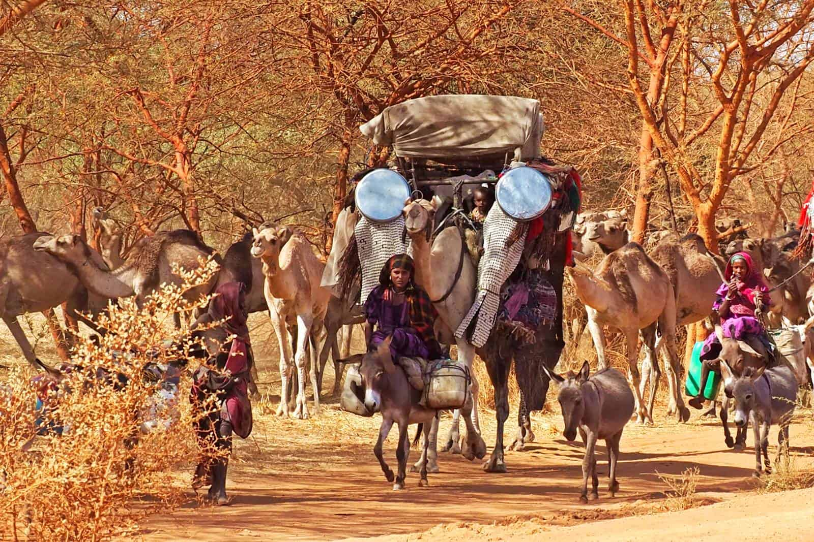
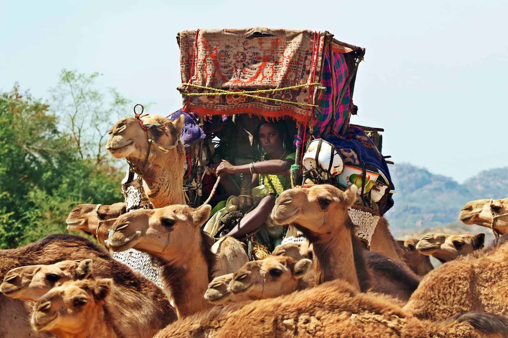
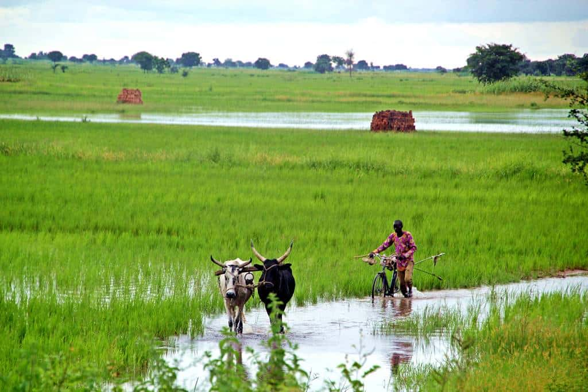

Gallery
Explore the beauty and culture of Chad through our curated gallery of images.

Arab nomads in the Salamat region of Chad, near Zakouma National Park

Chadian nomads have been marginalized and difficult to control since colonial times.

Rice cultivation and flooded roads in Southern Chad during the rainy season

View into the legendary Guelta d'Archeï, Ennedi massif, Sahara, Chad stock photo

Rare Kordofan giraffes in Zakouma, Chad

Aerial sunrise Panoramic view to Yoa lake group of Ounianga kebir lakes at the Ennedi, Chad stock photo

Herd of camels, Ennedi massif, Sahara, Chad stock photo

Escorting a passenger airliner by car - follow me after landing at the destination airport. stock photo

Women riding on donkeys to the town of Bitkine, Chad stock photo

Princess Marina Hospital in Gaborone stock photo